来源：https://zwia799oeo3.feishu.cn/docx/HkHqdPvQdov4wSxrCz9cG4NvnPe
大家好。我是乐乐，今天给大家复盘一下我新起的闲鱼爆单的操作复盘。
我是从23年11月份开始做闲鱼的，从二手书开始，最高也就一个月7000多利润。24年7月因为二手书办的证被注销了。另外二手书成本高，目前竞争激烈，用软件上书的效果越来越差。所以开始转移到闲鱼虚拟，刚开始是卖书的老号开始发虚拟，但是效果一直不好。最高也就7个号一天一共100多一天利润（全职）。
在机缘巧合下开新号测试，终于除了效果，
从10月11号开新号上品。到今天11月11日截止，目前操作新号一共出了1697多单。单日 最高曝光7万，最高一天276单，收益267元。做的是考试虚拟资料领域，新号目前一共40多个品。
下面详细的跟大家说一下我的复盘内容：
目录
一、关于我自己
二、目前进展及成绩
三、拆解复盘
四、注意事项
五、项目心得
六、接下来的打算
11年接触网赚，给淘宝客网站改代码，后面做过淘宝客群，用易语言写过qq加好友、一些网站app的私信程序。16年开始做自媒体，到2020年算是赚到人生第一桶金。
只不过因为焦虑症（抑郁症）原因状态越来越差，2022年才算好些，后又做视频号带货和视频号圈子。因为私自停药加上疫情期间的压力导致23年初虽然视频号小店和直播都有些成果，直播在年底前做年货实景的7天最多10万GMV.但是因为精神状态不好没算支出。身体方面又续发了狂躁症（基本上就是精神病了吧）。封闭住院一个月，出院后算了才知道总体亏损有100万左右。
出院后还有精神分裂的情况，就是有另外一个自己给现在的自己说话这种。这期间做了最后悔的就是在这情况下不知道当时咋想的。把所有的微信群、好友。qq好友、群都删了退了。包括我身边所有人的联系方式。我说这多其实是有原因的，就是当时搞得知识星球圈子的人也让我删了。
虽然我大部分都能找到。但还是有些找不到了。现在虽然经济方面还是非常紧张。但是大概年底前能把所有人的费用都退了。所以之前加过我圈子的看到了找鱼丸要我的联系方式。当然目前我除了家里人其他的好友还没加，因为加回来需要说明原因，我现在虽然好点了。但是每加一个都说下病的事情对我病情来说还是有不小负担的。。。 当然 我会在年底前能加得都加回来，然后把圈子的费用退了。
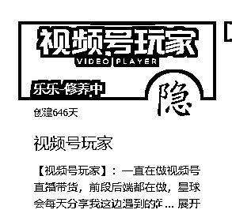
这是圈子的名字。
目前操作新号一共出了1697多单。单日 最高曝光7万，最高一天276单，收益267元。
新号目前有45个宝贝，目前出单的有28个。当然上了不止这些品。效果差的放5-7天就删除了。
每天上架1-7个。大部分没做太多修改，只是图片修改md5.介绍加了些符号和日期（方便删除）。
目前100%的单子来自于15天内。也就是15天没有出单。做项目还是要沉住气，至少要坚持一个月以上。
7个老号收益有一定增长（增长很慢。最近又有点下降）
封了一个老号，一个号扣20分。当然这个是值得的，不要怕出问题，有挫折才能进步。
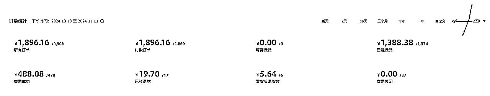
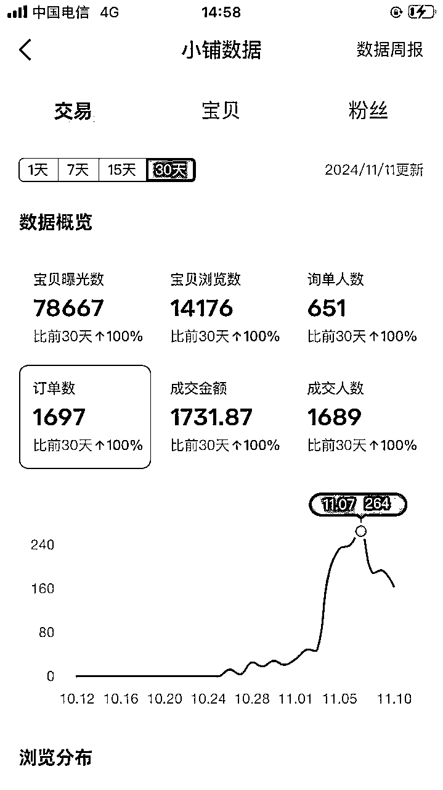
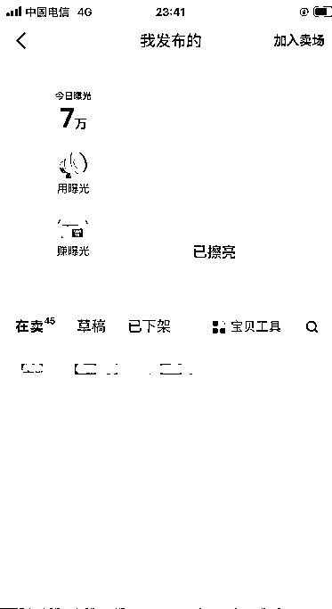
本身我是有7个闲鱼老号的。一直再用软件上品。从5月淘金计划开始不管咋改变策略。不管怎么调整一直是一天100左右的收益。很是头疼。
软件目前采集和上品都是自己写的影刀脚本。
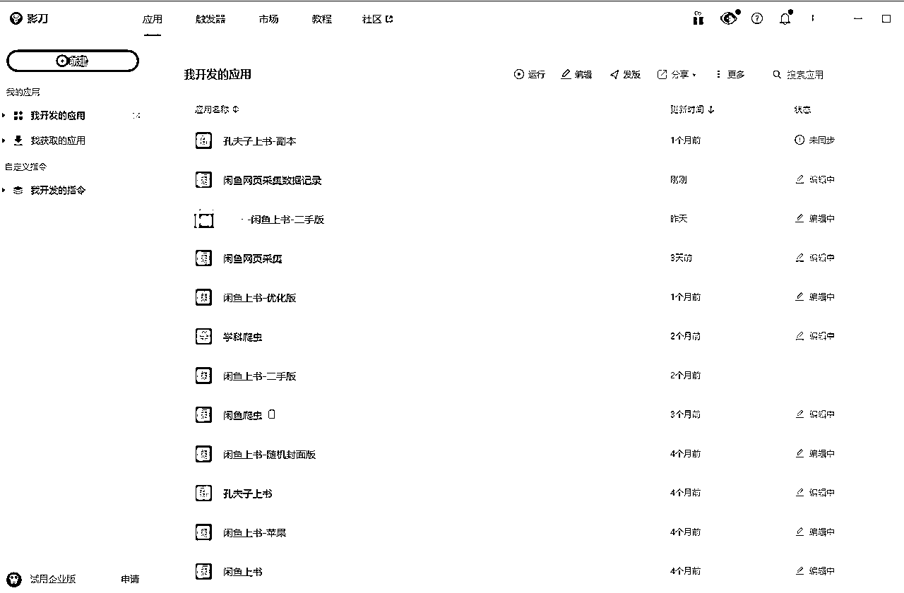
新号开始做时 主要心思还在软件上。想把采集以及上传方面的一些功能完善，每天看到感觉不错的就上传。没有按闲鱼高手们所说的1:10去选。其他也没啥操作。基本上没单。第一单是网课，之后好几天没出。
变化就是软件写的差不多了。老号每天上20个品也没效果。才把重心转移到新号上。开始把老号出单的品放到新号。另外开始互刷好评，刚开始找他们刷，但是实在太慢，一个小时下来就刷1-2个，所以后面开始自己发小黄鱼相关的宝贝，主动让他们找我。这样快了很多。
而且如果感觉刷的差不多了。直接把链接下掉就行了。只不过下掉的链接第二天再上架一般也不来人了。所以 这时候再重新发了就好了。就这样连刷了三天一共20单左右。第四天有个链接突然开始发力一天出了十几单。
正好在这时候留意起来了超级曝光，开始正式投超级曝光。突然订单就多了起来。再然后有个三四天的样子，订单有所下滑，然后想到了好评的事情， 把待好评的都评了。
然后跟他们说好评送 ****。送的东西是和商品相关且价值还不错的。 要到了10几个好评。然后就在要好评的第二天品就开始爆发了。基本上每天都有100单以上。
接下来就是发链接的下面我都带着好评送什么东西，每天至少有10-20个好评。
目前爆单的品我卖的是最多的。另外每天对于爆品、出单的号。还有刚上的感觉不错的号都去进行投超级曝光这个操作。如果花0.5-1元不出单就停掉计划。筛选出roi 2以上的继续追投。
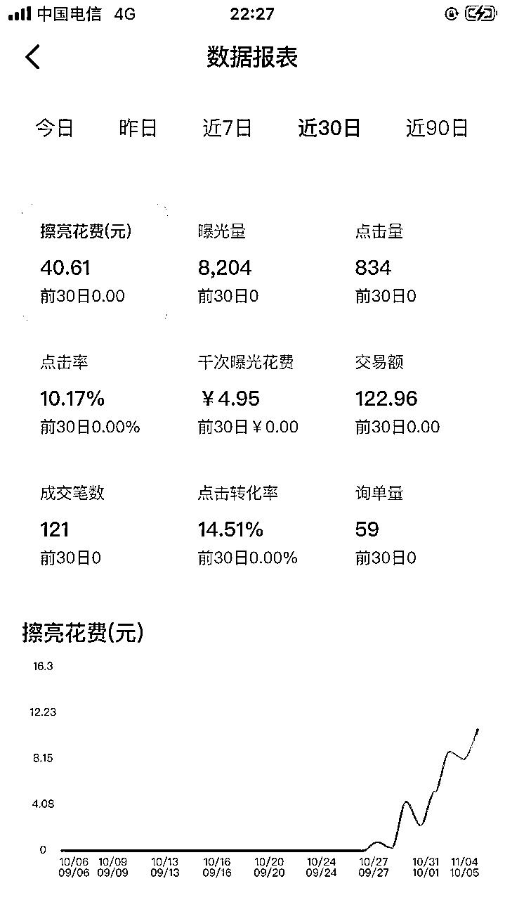
投超级暴光的数据
1、虚拟品相对来说风险还是有的。如果你本身是公职人员、事业单位的。尽量还是用父母的或者非这些单位的去注册。虽然一般没事，但是没有绝对安全的品。这方面是能规避下还是规避下。
2、网课类、破解软件类刚开始尽量不要碰。 这俩是最容易出问题的两个分类
3、刚开始上品的时候，图片标题不要大改，本身爆品就是因为图片和标才爆的，才有效果了。新手没有经验，凭自己感觉是很难改后还能爆的。就拿我自己来说，我信号最爆的品，重新弄了俩链接， 一个主图一样，一个自己弄得图 ，其实自己弄的图里信息更多，但是目前一单不出。一样主图的，已经21单了。一天时间。
4、刚开始操作不要想着批量化，先慢慢的手工一步步的把效果做起来。我从刚开始做的时候老号还在批量发。到现在已经全部停了。因为实在是浪费功夫。目前打算手工做起来3个号，把细节完善了在去批量用软件上品。
目前的难点就是现在于不清楚个体没有对公的情况下能不能申请企业支付宝。这是唯一的问题。
选品的核心主要取决于需求，所以我们选品就是要找短时间内有大量购买的。
可以监控单账号每天的单数增长。单数增长快的重点找他们的品。
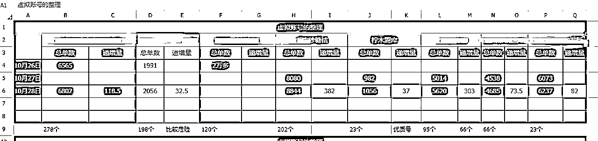
就像这样，用表格记录下，有先找递增量高的账号里的品。
单子成交后一定要好评。可以增加品和店铺的权重。能够增加品爆单的几率。
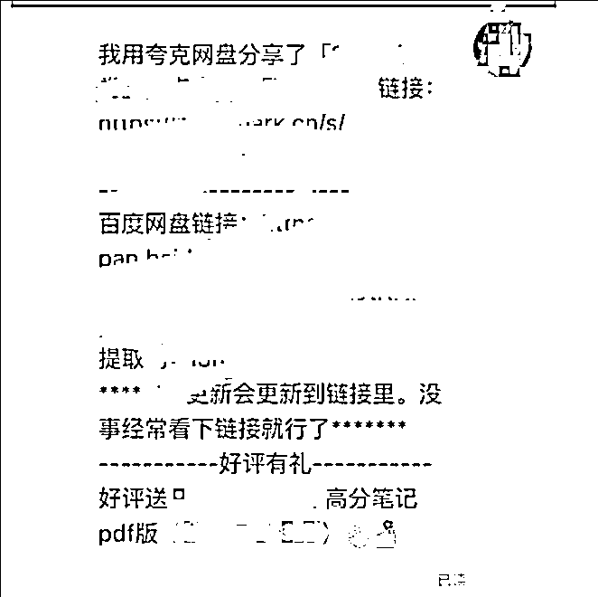
要好评的例子
对于出单的可以尝试用超级曝光推广。增加爆品概率。
可以对于出单的或者需求量高的品都去投一下。投了之后间隔两到三小时查看一下，花费多不出单的关了。以免亏钱。
稍微有点效果了一定要申请网盘拉新推广，除了拉新收益还可以免费获得会员以及扩容。
不着急的话出首单可以尝试公众号 搜索下资源，最近有些资源 直接搜就有。省了进货成本。还有小红书， 也有很多搞网盘推广的 免费分享夸克网盘链接。
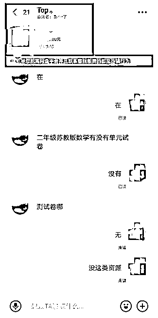
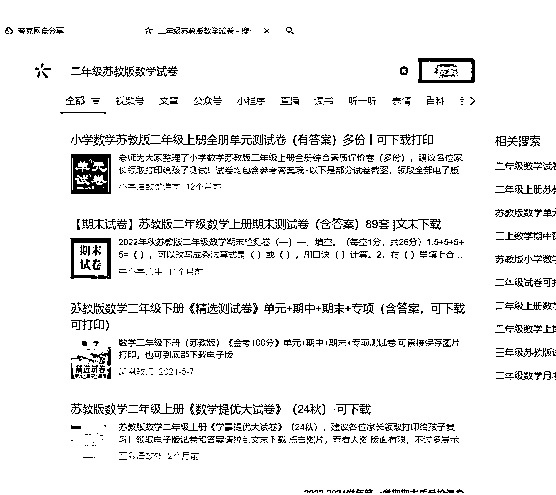
这个就脑抽直接回复没有。然后公众号一搜，一堆测试卷。
品感觉有可能违规， 但还想做。 可以 收藏这个品的一些商品，隔一段看看链接还在不在，这样可以判断这个品是否能持续做
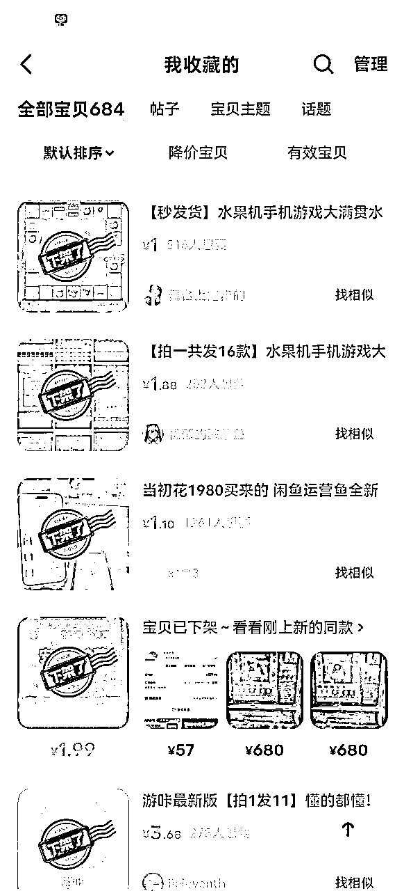
这是我之前做的一个品。可以看到都下架了。说明这个品肯定不能做了。当然这个品类当时只是提示违规删除。没别的，然后我把这类的全删了。
除了看到宝贝以外，点下商家的名字，看号还在不在，这样就能够预估风险了。
公益宝贝和闲鱼币折扣 能开的都开下，能增肌曝光。
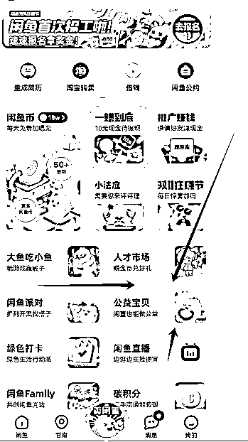
公益宝贝在这个位置
闲鱼币抵扣，就在上面图中的 闲鱼币， 然后找闲鱼币抵扣就行了。
现在正在运营第二个新号了。有准备了三个号。打算养个三五天都开始，争取做起来几个号。把收益稳定到300-1000元。软件方面的有打算写个闲管家的第三方虚拟资料管理系统。可以统计每天收益。能够分析出哪些品有潜力。采集宝贝。找出爆品之类的， 一步步来吧。